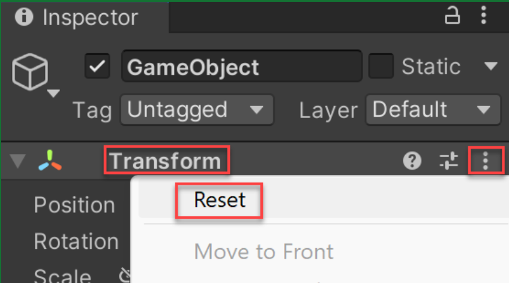
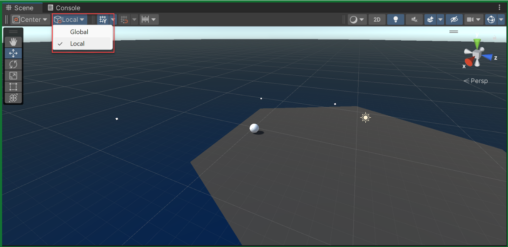

Watch the arena in action
Watch the short gameplay preview with sound. A rolling player faces enemies on a floating island, collects a temporary advantage, and tries to push enemies over the edge. Imagine playing it before thinking about the code.
How was this made?
Make a guess before you read on. You do not need any Unity terminology yet.
- If you move to the other side of the island, how could every enemy know which way to chase you?
- How could turning the camera change what “forward” means for the rolling player?
- Why would touching the same enemy give a much stronger push after collecting the pickup?
- How could that advantage disappear after a few seconds while the game keeps running?
- How could the game know when you have cleared every enemy and should face a larger group?
You will build and test each of these rules. Keep your guesses in mind as the scene takes shape.
From individual events to changing game rules
A gameplay mechanic is a rule that shapes what a player can do and what happens in response. Here, enemies chase you, a pickup changes how strongly you push them, and clearing the island brings a larger group. You will connect these rules into a playable arena.
Connection to earlier work: Unity Basic Gameplay created objects during play, and Unity Sound and Effects used the player’s situation to decide whether an action was allowed. This lesson adds changing directions, temporary advantages, and rounds that depend on the enemies remaining. The concepts below are an overview; the post-step explanations teach the code and settings when you use them.
Learning outcomes
By the end of this lecture, you will be able to:
- Calculate a normalized chase direction and use a camera pivot as a movement reference.
- Start, refresh, and expire a temporary powerup while keeping its indicator consistent.
- Spawn increasing enemy waves when the previous population reaches zero.
- Diagnose a reversed direction and demonstrate the corrected gameplay sequence.
Chase and ordinary contacts.
Pickup → seven-second timer → extra enemy knockback.
Last enemy removed → larger batch and one pickup.
New conceptDirection and magnitude
An enemy needs to know which way to move to reach you. If you roll to its left, it should turn left; if you cross to the other side, its direction should change with you. A vector describes a direction and an amount. You will use one to point from each enemy toward the player, then choose how strongly it should move.
The player also needs a consistent meaning for “forward.” Its sphere keeps tumbling, so its own front would keep changing. Instead, an upright object called Focal Point turns with the camera. When you rotate the view and press forward, the player moves in the direction this reference faces.
New conceptTemporary state and coroutines
A state remembers the player’s current situation. Collecting a powerup puts the player into a powered state: a ring appears and touching an enemy gives it extra knockback. After seven seconds, the ring disappears and ordinary contact returns. Collecting another pickup before then starts a fresh seven-second duration.
A coroutine lets a sequence pause and continue later while the rest of the game keeps running. You will use one for the countdown, so enemies can keep chasing and the player can keep moving while the powerup waits to expire.
New conceptPopulation-driven waves
A wave is a group of enemies you face together. The first wave has one enemy. Once that enemy is gone, the next wave has two; clear those and the next has three. A new group should appear only after every enemy in the current group has been removed.
The game therefore needs to know how many enemies remain, which is its current population. If two of three enemies fall away, one is still left and the wave continues. You will count the remaining enemies, remove those that fall off the island, and use an empty arena to start the next round with another pickup.
Prepare the Prototype 4 scene
Before class, create a fresh project with the official environment, import the four lecture scripts, and wire the scene. Keep Play mode off while saving assignments. No earlier project files are needed.
Import the official environment and scripts.
Optional source demonstrations; players start at 2× speed. Follow this lecture’s download and save paths. Its four supplied scripts replace the source’s generated input wrapper.
Create project and open sceneUnity Learn 4.1 · step 1 · supports lecture 1.1.1–1.1.3
Unity Technologies · Original tutorial step · Open video · English captions available in the player.
Configure project settings for the Input SystemUnity Learn 4.1 · step 4 · supports lecture 1.1.4–1.1.6
Unity Technologies · Original tutorial step · Open video
- In Unity Hub, create a Universal 3D project using Unity 6.3. Name it Gameplay Mechanics.
- Download Prototype 4 Starter Files. The link is a
.unitypackage, not a ZIP. Import it through Assets → Import Package → Custom Package… and import all listed assets. - Open Assets/Scenes/Prototype 4.unity. Use File → Save As… to save Assets/Scenes/Gameplay Mechanics.unity.
- In Window → Package Management → Package Manager, verify that Input System is installed; install it from Unity Registry if missing.
- Set Edit → Project Settings → Player → Other Settings → Configuration → Active Input Handling to Input System Package (New). The supplied scripts use the new Input System. Allow any requested restart.
- In Project Settings → Input System Package → Settings, use Update Mode → Process Events In Dynamic Update.
- Download the four lecture scripts. Extract outside the project, then copy the four
.csfiles into Assets/Scripts. Keep one copy of each class and wait for compilation.
Explanation
An Input Action represents an intention such as moving, and its bindings say which keys produce it. A composite combines several keys into one two-dimensional value: one axis for left/right and another for forward/backward. The script enables these actions when its component becomes active and disables them when it stops being active.
The package contains the scene, Island, sky, mist, pickups, and indicator prefabs. The lecture adds gameplay scripts. ArenaOrbit creates a Move action with two keyboard composites in code, so this lab does not require a generated input wrapper or a Player Input component. It still uses the Input System package and the enable/disable lifecycle from Player Control.
Prepare the camera pivot and a rolling player.
Optional source demonstrations. Use this lecture’s transforms, Rigidbody settings, and
ArenaOrbitscript; texture customization is not required.Set up the player and add a textureUnity Learn 4.1 · step 2 · supports lecture 1.2.4–1.2.5
Unity Technologies · Original tutorial step · Open video · English captions available in the player.
Create a focal point for the cameraUnity Learn 4.1 · step 3 · supports lecture 1.2.2–1.2.3
Unity Technologies · Original tutorial step · Open video · English captions available in the player.
- Keep the starter Island at its imported transform. Verify its Mesh Collider is enabled with Is Trigger off; the island needs no Rigidbody.
- Create an empty root GameObject named Focal Point. Reset its Transform using the component’s three-dot menu → Reset. Attach the ArenaOrbit script to this root.
- Drag Main Camera onto Focal Point in the Hierarchy. Set the camera’s local Position to (0, 10, -20), local Rotation to (25, 0, 0), and Field of View to 60. Keep exactly one Audio Listener.
- Create GameObject → 3D Object → Sphere, name it Player, and set Position (0, 2, 0), Rotation (0, 0, 0), Scale (1.5, 1.5, 1.5). Keep its Sphere Collider solid.
- Attach the ArenaPlayer script to Player root. Its required Rigidbody is added automatically. Set Mass 1, Use Gravity on, Is Kinematic off, Linear Damping 0.5, Interpolate Interpolate, Collision Detection Continuous Dynamic, and leave all constraints off.
- Drag Assets/Course Library/Powerup Indicators/SelectionRing_06.prefab into the Hierarchy as a separate root named Powerup Indicator. Set Scale (3, 1, 3) so the ring extends beyond the ball, then turn off the root’s Active checkbox. Keep it free of colliders.
- On Player’s Arena Player component, assign Focal Point from the Hierarchy to Focal Point and the separate indicator root to Powerup Indicator. Keep Move Force 10, Powerup Strength 15, Powerup Duration 7.
Explanation
A parent carries its child objects when it moves or rotates. Making Main Camera a child of Focal Point means rotating that point swings the camera around the arena. Player is outside that hierarchy, so the same rotation changes the view without rotating Player’s position around the island.
LateUpdate is a method Unity calls after the frame’s ordinary Update methods. Here it places the indicator under Player each frame. Following only position keeps the ring upright while the sphere rolls.
Parenting makes the camera orbit when Focal Point rotates. The camera’s tilted viewing direction differs from the pivot’s horizontal forward direction. The player remains a separate physics object, so rotating the pivot does not drag it around. The ring also stays separate: LateUpdate follows the rolling player’s position without inheriting its tumbling rotation.

Create enemy and pickup prefabs for the later tests.
Optional source demonstrations. Keep this lecture’s root tags, collider sizes, and default contact materials. The source’s Bouncy Physics Material is not part of this lab.
Add an enemy and a physics materialUnity Learn 4.2 · step 1 · supports lecture 1.3.1–1.3.3
Unity Technologies · Original tutorial step · Open video · English captions available in the player.
Choose and prepare a powerupUnity Learn 4.3 · step 1 · supports lecture 1.3.4–1.3.6
Unity Technologies · Original tutorial step · Open video · English captions available in the player.
- Create a second Sphere named Enemy at (4, 2, 0) with Scale (1.5, 1.5, 1.5). Create an Enemy tag through Tag → Add Tag…, return to Enemy, and assign it.
- Attach the ArenaEnemy script to Enemy root. On its Rigidbody use Mass 1, Use Gravity on, Is Kinematic off, Linear Damping 0.5, Interpolate Interpolate, Collision Detection Continuous Dynamic, and no constraints. Keep the Sphere Collider solid.
- Create Assets/Prefabs. Drag Enemy into it, then delete the scene instance. Leave Chase Force at 3 on the prefab.
- Drag Assets/Course Library/Pickups/PowerIcon.prefab into the Hierarchy. Rename it Powerup and use Prefab → Unpack Completely on this instance. Set Position (0, 0, 3), Rotation (0, 0, 0), Scale (1, 1, 1).
- Create and assign the Powerup tag to its root. Add one root Box Collider with Center (0, 0, 0), Size (1.5, 2, 1.5), and Is Trigger on. Do not add a Rigidbody to this pickup.
- Drag Powerup into Assets/Prefabs to save a new prefab, then delete the scene instance. The tall trigger intersects the rolling ball even though the icon is only a visual asset.
Explanation
A solid collider makes bodies meet and push against each other. A trigger detects overlap without acting as a solid barrier. That is why the enemy uses a solid collider while the pickup uses a trigger: you collide with an enemy, but can pass through a pickup as you collect it. Tags let the code identify which type of object was touched.
The enemy root owns its Rigidbody, solid collider, tag, and script. The pickup root owns its trigger and tag. The player Rigidbody supplies the physics body required for trigger detection. A visible pickup mesh alone cannot call OnTriggerEnter. The lecture keeps default contact materials: normal physical contact and powered extra knockback will be easy to compare.
Wire the wave controller but leave it disabled for isolated tests.
Optional source demonstration. Assign this lecture’s
ArenaWavesreferences, then leave the component disabled until the wave test. The source shows a different, intermediateSpawnManagerscript.Create a Spawn Manager for the enemyUnity Learn 4.2 · step 4 · supports lecture 1.4.1–1.4.3
Unity Technologies · Original tutorial step · Open video · English captions available in the player.
- Create an empty root named SpawnManager and attach the ArenaWaves script.
- Drag Player from the Hierarchy to Player. Drag the Enemy and Powerup prefab assets from the Project window to Enemy Prefab and Powerup Prefab.
- Keep Spawn Range 5 and Spawn Height 2. Turn off the Arena Waves component’s checkbox while leaving the SpawnManager GameObject active.
- Save the scene. Enter Play mode and click Game view. Hold W or Up to roll, S or Down to reverse, and A/D or Left/Right to orbit. Confirm the ball lands on the island and the Console has no red errors.
- Stop Play mode. Save again outside Play mode. Start class with no scene Enemy or Powerup and with Arena Waves disabled.
Explanation
Disabled Arena Waves does not run its Start method yet. This lets you test movement before adding pursuit, pickup state, and population changes. Runtime clones are temporary; prefab assets and Inspector assignments saved outside Play mode form the reusable setup. If Player falls through the island, resolve its solid collider and the island’s Mesh Collider before proceeding.
| Object | Responsibility | Required connection |
|---|---|---|
| Focal Point | Read input and rotate the camera parent | ArenaOrbit script; Main Camera child |
| Player | Apply movement, pickup state, and knockback | ArenaPlayer; Focal Point and indicator references |
| Enemy prefab | Pursue and remove itself after falling | ArenaEnemy; Enemy tag; solid collider and Rigidbody |
| Powerup prefab | Detect collection | Powerup tag; root Box Collider trigger |
| SpawnManager | Count enemies and create the next wave | ArenaWaves; player and both prefab references |
Refresher (1)Direction and magnitude
An enemy needs to know which way to move to reach you. If you roll to its left, it should turn left; if you cross to the other side, its direction should change with you. A vector describes a direction and an amount. You will use one to point from each enemy toward the player, then choose how strongly it should move.
The player also needs a consistent meaning for “forward.” Its sphere keeps tumbling, so its own front would keep changing. Instead, an upright object called Focal Point turns with the camera. When you rotate the view and press forward, the player moves in the direction this reference faces.
Use the camera pivot as a movement reference
Use the prepared scene to separate input, camera rotation, and physical motion. Read the complete input support script, then trace the force applied to the player.
Test movement against the pivot’s heading.
Optional source demonstrations. They build movement incrementally with different scripts. The lecture’s final version reads
ArenaOrbitinput, applies force inFixedUpdate, and uses the upright pivot’s forward direction.Rotate the focal point by user inputUnity Learn 4.1 · step 8 · supports lecture 2.1.1–2.1.2
Unity Technologies · Original tutorial step · Open video · English captions available in the player.
Add forward force to the playerUnity Learn 4.1 · step 10 · supports lecture 2.1.3–2.1.4
Unity Technologies · Original tutorial step · Open video · English captions available in the player.
Move in direction of focal pointUnity Learn 4.1 · step 11 · supports lecture 2.1.1–2.1.4
Unity Technologies · Original tutorial step · Open video · English captions available in the player.
- Leave Arena Waves disabled and enter Play mode. With Focal Point Rotation Y near 0, hold W briefly and observe motion toward world positive Z.
- Stop and restart Play mode. Hold D until Focal Point Rotation Y is about 90. Release D, then hold W and observe motion toward world positive X.
- Hold S to apply force in the opposite direction. Notice that existing momentum must slow before the ball reverses.
- Stop Play mode and open ArenaPlayer.cs. Locate
FixedUpdateand identify the heading, input value, and force magnitude in itsAddForceexpression.
Explanation
Focal Point acts as an upright direction reference. focalPoint.transform.forward is its local positive Z axis expressed in world coordinates. At zero Y rotation it points along world +Z; turning it 90° around Y makes it point along world +X. The sphere’s own axis would tumble as it rolls, so it would not give a stable movement direction.
The movement expression combines three pieces: direction, input, and force amount. For example, a forward input of 1 and moveForce = 10 push along the pivot’s forward direction with force magnitude 10. Input -1 reverses the direction; input 0 adds no force. Existing momentum can still carry the sphere onward.
Unity calls FixedUpdate at regular physics intervals. Applying movement force there keeps each push aligned with the simulation of the Rigidbody. MoveInput.y is positive for forward and negative for reverse. Multiplying it by the pivot’s forward direction chooses a world-space force. AddForce with its default force mode lets the physics simulation integrate force over each fixed step, so this expression does not multiply by Time.deltaTime. moveForce is a force setting, not a guaranteed speed. Momentum and damping still affect movement.
using UnityEngine;
using UnityEngine.InputSystem;
public class ArenaOrbit : MonoBehaviour
{
[SerializeField] private float rotationSpeed = 90f;
private InputAction move;
public Vector2 MoveInput { get; private set; }
private void Awake()
{
move = new InputAction("Move", InputActionType.Value);
move.AddCompositeBinding("2DVector")
.With("Up", "<Keyboard>/w")
.With("Down", "<Keyboard>/s")
.With("Left", "<Keyboard>/a")
.With("Right", "<Keyboard>/d");
move.AddCompositeBinding("2DVector")
.With("Up", "<Keyboard>/upArrow")
.With("Down", "<Keyboard>/downArrow")
.With("Left", "<Keyboard>/leftArrow")
.With("Right", "<Keyboard>/rightArrow");
}
private void OnEnable() => move.Enable();
private void OnDisable()
{
move.Disable();
MoveInput = Vector2.zero;
}
private void OnDestroy() => move.Dispose();
private void Update()
{
MoveInput = move.ReadValue<Vector2>();
transform.Rotate(Vector3.up,
MoveInput.x * rotationSpeed * Time.deltaTime);
}
}

Refresher (2)Direction and magnitude
Chasing requires the direction from one object to another. Subtract the starting position from the destination: target - current. The resulting displacement includes both direction and distance. Its normalized value keeps the direction and gives it length 1, so a chosen force does not grow merely because the target is farther away.
A rolling sphere’s own forward axis tumbles. Use the upright Focal Point’s transform.forward for player movement instead. That property expresses its local positive Z direction in world coordinates.
Examples
- Chase: From
(1, 0, 2)toward(4, 0, 6), displacement is(3, 0, 4)and normalized direction is(0.6, 0, 0.8). - Retreat: Reversing the subtraction gives
(-3, 0, -4), away from the same target. - Turn: Rotating Focal Point by
90°around Y changes its forward from world+Zto world+X.
Calculate normalized enemy pursuit
Add one enemy so pursuit can be tested independently of random spawning. Direction math decides where it pushes; the Rigidbody decides how that force affects motion.
Trace one enemy’s pursuit direction.
Optional source demonstrations. Use the supplied
ArenaEnemyscript: it clears the displacement’s Y component, normalizes it, and applies force inFixedUpdate.Create enemy script to follow playerUnity Learn 4.2 · step 2 · supports lecture 3.1.1–3.1.3
Unity Technologies · Original tutorial step · Open video · English captions available in the player.
Create a lookDirection variableUnity Learn 4.2 · step 3 · supports lecture 3.1.3–3.1.4
Unity Technologies · Original tutorial step · Open video · English captions available in the player.
- Outside Play mode, drag the Enemy prefab into the scene at (4, 2, 0). Keep Arena Waves disabled.
- Enter Play mode and move Player around. Observe that Enemy changes its heading toward Player, rather than continuing along a fixed world axis.
- Open ArenaEnemy.cs. Trace
player.transform.position - transform.position, then the Y reset, thennormalized. - Calculate the direction for enemy (1, 0, 2) and player (4, 0, 6). Predict it before checking the explanation.
- Stop Play mode. Leave this single enemy instance for the next section.
Explanation
A displacement vector describes the direction and distance from a starting position to a destination. Compute it as target - current. For this enemy, the destination is Player, so player.transform.position - transform.position points toward Player. Swapping the order points away.
Magnitude is the vector’s length. Normalization divides a nonzero vector by that length, keeping its direction but giving it length 1. This lets chaseForce choose the force amount independently of distance: an enemy farther away does not receive a larger push just because its displacement is longer.
The subtraction gives (3, 0, 4), whose length is 5. Dividing by 5 gives (0.6, 0, 0.8). Multiplying by Chase Force 3 produces force (1.8, 0, 2.4). Clearing Y restricts pursuit force to the arena plane; gravity still controls falling. The script finds the scene’s one active ArenaPlayer in Start, so a prefab does not need to store a reference to a scene object.
using UnityEngine;
[RequireComponent(typeof(Rigidbody))]
public class ArenaEnemy : MonoBehaviour
{
[SerializeField] private float chaseForce = 3f;
[SerializeField] private float fallLimit = -10f;
private Rigidbody body;
private ArenaPlayer player;
private void Awake() => body = GetComponent<Rigidbody>();
private void Start()
{
player = FindFirstObjectByType<ArenaPlayer>();
if (player == null)
{
Debug.LogError("The scene needs one active ArenaPlayer.", this);
enabled = false;
}
}
private void FixedUpdate()
{
if (player == null || player.GameOver) return;
Vector3 direction = player.transform.position - transform.position;
direction.y = 0f;
body.AddForce(direction.normalized * chaseForce);
}
private void Update()
{
if (transform.position.y < fallLimit) Destroy(gameObject);
}
}
Refresher (3)Direction and magnitude
Chasing requires the direction from one object to another. Subtract the starting position from the destination: target - current. The resulting displacement includes both direction and distance. Its normalized value keeps the direction and gives it length 1, so a chosen force does not grow merely because the target is farther away.
A rolling sphere’s own forward axis tumbles. Use the upright Focal Point’s transform.forward for player movement instead. That property expresses its local positive Z direction in world coordinates.
Examples
- Chase: From
(1, 0, 2)toward(4, 0, 6), displacement is(3, 0, 4)and normalized direction is(0.6, 0, 0.8). - Retreat: Reversing the subtraction gives
(-3, 0, -4), away from the same target. - Turn: Rotating Focal Point by
90°around Y changes its forward from world+Zto world+X.
Implement a timed powerup
Use the trigger to enter a powered state, then let a coroutine expire it. Compare ordinary enemy contact with powered contact and confirm that the visual indicator follows the same lifetime.
Observe collection, knockback, and expiry.
Optional source demonstrations. Use the complete
ArenaPlayerscript and this lecture’s seven-second duration, normalized horizontal impulse, separate indicator root, andLateUpdateposition tracking.Destroy powerup on collisionUnity Learn 4.3 · step 2 · supports lecture 4.1.1–4.1.3
Unity Technologies · Original tutorial step · Open video · English captions available in the player.
Test for enemy and powerupUnity Learn 4.3 · step 3 · supports lecture 4.1.2–4.1.3
Unity Technologies · Original tutorial step · Open video · English captions available in the player.
Apply extra knockback with powerupUnity Learn 4.3 · step 4 · supports lecture 4.1.3
Unity Technologies · Original tutorial step · Open video · English captions available in the player.
Create Countdown Routine for powerupUnity Learn 4.3 · step 5 · supports lecture 4.1.4–4.1.5
Unity Technologies · Original tutorial step · Open video · English captions available in the player.
Add a powerup indicatorUnity Learn 4.3 · step 6 · supports lecture 4.1.3–4.1.4
Unity Technologies · Original tutorial step · Open video · English captions available in the player.
- Outside Play mode, drag the Powerup prefab into the scene at (0, 0, 3). Keep one Enemy and Arena Waves disabled.
- Enter Play mode. First touch Enemy without collecting the pickup. Observe ordinary contact response.
- Collect Powerup, confirm the pickup disappears and the ring appears, then contact Enemy again while the ring is visible. Look for the extra push away from Player.
- Select Player during Play mode and watch Has Powerup in Arena Player. After roughly seven seconds, both the flag and ring should turn off. Do not manually tick this field.
- Stop Play mode. Read
OnTriggerEnter,PowerupCountdown, andOnCollisionEnterin the complete script below.
Explanation
The hasPowerup Boolean stores the temporary rule: true enables extra knockback and false leaves ordinary contact. OnTriggerEnter is Unity’s callback when a collider enters a trigger. The Powerup tag check accepts the pickup, while OnCollisionEnter handles solid enemy contact. These are different events with different responsibilities.
A coroutine is a sequence that can suspend itself and resume on a later frame. PowerupCountdown returns IEnumerator, the type Unity uses for this sequence, and StartCoroutine starts it. At yield return new WaitForSeconds(powerupDuration), only this routine waits. Movement and pursuit continue on the main thread. After roughly seven seconds of scaled game time, the remaining statements run to clear the state and hide the ring.
For knockback, enemyBody.position - body.position points from Player toward the enemy, away from Player. The normalized direction times powerupStrength gives a one-time push using ForceMode.Impulse. This extra push occurs only during powered contact.
Collection destroys the pickup instance, sets hasPowerup, shows the ring, and starts the routine. Solid enemy contact is handled separately: it needs both the Enemy tag and an active powerup before applying a normalized outward impulse. The coroutine later clears the flag and hides the ring together. Here, SetActive(false) hides only the indicator; the Player remains active so its coroutine and input-driven movement continue.
Check that a second pickup refreshes the duration.
- Outside Play mode, duplicate the scene pickup and place the second at (0, 0, -3). Temporarily disable the scene Enemy GameObject to isolate the timer test.
- Enter Play mode. Collect the first pickup, then collect the second approximately five seconds later.
- Wait past the first pickup’s original expiry. The ring should remain active until roughly seven seconds after the second collection.
- Stop Play mode. Delete the duplicate pickup and reactivate the scene Enemy. Keep Powerup Duration at 7 in the saved scene.
Explanation
Trace two collections: the first at game time 0 would expire around 7. Collecting again at 5 cancels that wait and begins another seven-second wait, so the refreshed powerup expires around 12. Otherwise, the first routine could still switch off the new advantage at 7.
Each pickup could start a separate countdown. Without cancelling the earlier one, its pending final statements could clear a newer powerup. The stored Coroutine handle identifies the old routine so StopCoroutine(countdown) cancels it before starting the replacement. This implements refresh semantics: a second collection resets the duration; it does not add seven seconds to the old expiry.
using System.Collections;
using UnityEngine;
[RequireComponent(typeof(Rigidbody))]
public class ArenaPlayer : MonoBehaviour
{
[SerializeField] private ArenaOrbit focalPoint;
[SerializeField] private GameObject powerupIndicator;
[SerializeField] private float moveForce = 10f;
[SerializeField] private float powerupStrength = 15f;
[SerializeField] private float powerupDuration = 7f;
[SerializeField] private float fallLimit = -10f;
[SerializeField] private bool hasPowerup;
private Rigidbody body;
private Coroutine countdown;
public bool GameOver { get; private set; }
private void Awake()
{
body = GetComponent<Rigidbody>();
if (focalPoint == null || powerupIndicator == null)
{
Debug.LogError("Assign Focal Point and Powerup Indicator on Player.", this);
enabled = false;
return;
}
powerupIndicator.SetActive(false);
hasPowerup = false;
}
private void Update()
{
if (!GameOver && transform.position.y < fallLimit)
{
GameOver = true;
ClearPowerup();
Debug.Log("Player fell. Stop and restart Play mode to retry.", this);
}
}
private void FixedUpdate()
{
if (GameOver) return;
body.AddForce(focalPoint.transform.forward *
focalPoint.MoveInput.y * moveForce);
}
private void LateUpdate()
{
powerupIndicator.transform.position =
transform.position + new Vector3(0f, -0.65f, 0f);
}
private void OnTriggerEnter(Collider other)
{
if (GameOver || !other.CompareTag("Powerup")) return;
other.enabled = false;
Destroy(other.gameObject);
if (countdown != null) StopCoroutine(countdown);
hasPowerup = true;
powerupIndicator.SetActive(true);
countdown = StartCoroutine(PowerupCountdown());
}
private IEnumerator PowerupCountdown()
{
yield return new WaitForSeconds(powerupDuration);
hasPowerup = false;
powerupIndicator.SetActive(false);
countdown = null;
}
private void OnCollisionEnter(Collision collision)
{
if (GameOver || !hasPowerup ||
!collision.gameObject.CompareTag("Enemy")) return;
Rigidbody enemyBody = collision.rigidbody;
if (enemyBody == null) return;
Vector3 away = enemyBody.position - body.position;
away.y = 0f;
enemyBody.AddForce(away.normalized * powerupStrength,
ForceMode.Impulse);
}
private void ClearPowerup()
{
if (countdown != null) StopCoroutine(countdown);
countdown = null;
hasPowerup = false;
if (powerupIndicator != null) powerupIndicator.SetActive(false);
}
private void OnDisable() => ClearPowerup();
}
Refresher (1)Temporary state and coroutines
A collected item changes a rule for a limited time: an enemy contact gains extra knockback while hasPowerup is true. The indicator displays that same state. A coroutine is a method whose execution can pause and resume across frames. It runs on Unity’s main thread; it does not freeze the game while it waits.
An IEnumerator method describes the sequence. StartCoroutine schedules it, and yield return new WaitForSeconds(duration) suspends that routine before its remaining statements run. This wait uses scaled game time and resumes on a later frame, rather than at an exact wall-clock instant.
Examples
- Pickup: At game time
0, show the indicator and enable extra knockback; after roughly7seconds, clear both. - Refresh: Collect again at time
5: stop the old countdown and begin a fresh seven-second wait, expiring around time12. - No powerup: A solid enemy contact still has normal physics response, but the script adds no extra impulse while
hasPowerupis false.
Why does the source mention both five and seven seconds?
Unity’s overview says five, but its countdown instructions and script use seven. This lecture consistently uses seven game-time seconds. Change the serialized duration in the Inspector when experimenting; changing a field initializer may not overwrite an existing saved Inspector value.
Spawn waves when the arena is cleared
Replace the manually placed objects with a population-driven controller. Confirm that clearing a wave, rather than collecting a pickup or waiting for an interval, starts the next batch.
Enable increasing waves and verify their trigger.
Optional source demonstrations. Follow the complete
ArenaWavesscript: the source shows intermediate versions, different names and spawn bounds. This lecture starts with one enemy, replaces an uncollected pickup, and stops progression after Player falls.Randomly generate spawn positionUnity Learn 4.2 · step 5 · supports lecture 5.1.3 and 5.1.6
Unity Technologies · Original tutorial step · Open video · English captions available in the player.
Make a method return a spawn pointUnity Learn 4.2 · step 6 · supports lecture 5.1.6
Unity Technologies · Original tutorial step · Open video · English captions available in the player.
Write a for-loop to spawn 3 enemiesUnity Learn 4.4 · step 1 · supports lecture 5.1.3–5.1.6
Unity Technologies · Original tutorial step · Open video · English captions available in the player.
Give the for-loop a parameterUnity Learn 4.4 · step 2 · supports lecture 5.1.5–5.1.6
Unity Technologies · Original tutorial step · Open video · English captions available in the player.
Destroy enemies if they fall offUnity Learn 4.4 · step 3 · supports lecture 5.1.5
Unity Technologies · Original tutorial step · Open video · English captions available in the player.
Increase enemyCount with wavesUnity Learn 4.4 · step 4 · supports lecture 5.1.5–5.1.6
Unity Technologies · Original tutorial step · Open video · English captions available in the player.
Spawn Powerups with new wavesUnity Learn 4.4 · step 5 · supports lecture 5.1.3–5.1.6
Unity Technologies · Original tutorial step · Open video · English captions available in the player.
- Outside Play mode, delete the manual Enemy and Powerup scene instances. Keep their prefab assets.
- Enable the Arena Waves component on SpawnManager and save the scene.
- Enter Play mode. Select SpawnManager and observe Wave Number 1 and Enemy Count 1. Confirm one enemy clone and one pickup exist in the Hierarchy.
- Collect the pickup while leaving the enemy alive. Confirm that collection alone does not start wave 2.
- Knock the enemy off the island. After it passes world Y −10 and is removed from the Hierarchy, verify wave 2 creates two enemy clones. Clear them to reach wave 3.
- Stop Play mode. Read
SpawnWave,GenerateSpawnPosition, and the zero-count condition below.
Explanation
waveNumber determines how many enemies a new wave creates; enemyCount measures how many remain now. They answer different questions. Wave 3 can have just one remaining enemy without changing its wave number.
FindObjectsByType<ArenaEnemy>(FindObjectsSortMode.None) searches for active loaded enemy components and returns an array. Its Length is the remaining population. This prototype checks that count in Update, once per rendered frame. When it reaches 0, waveNumber++ increases the next wave size by one and SpawnWave creates it. For a larger game, tracking arrivals and removals can avoid repeated scene searches.
for (int i = 0; i < enemiesToSpawn; i++) runs exactly the requested number of times. GenerateSpawnPosition returns fresh X and Z coordinates for each call. The count query measures enemy components, so destroying a pickup cannot clear the wave. Once enemies are instantiated, the next frame sees a nonzero count and does not immediately create another wave.
Falling is not the same as deletion: an enemy below the camera still counts until its cleanup runs. Destroy completes later in the frame, so detection of an empty wave can occur on a subsequent frame. The controller replaces an uncollected old pickup when spawning the next wave, keeping one available pickup. If Player falls below the limit, its GameOver state stops further waves and pursuit; stop and restart Play mode to retry.
using UnityEngine;
public class ArenaWaves : MonoBehaviour
{
[SerializeField] private ArenaPlayer player;
[SerializeField] private ArenaEnemy enemyPrefab;
[SerializeField] private GameObject powerupPrefab;
[SerializeField] private float spawnRange = 5f;
[SerializeField] private float spawnHeight = 2f;
[SerializeField] private int waveNumber;
[SerializeField] private int enemyCount;
private GameObject currentPowerup;
private void Start()
{
if (player == null || enemyPrefab == null || powerupPrefab == null)
{
Debug.LogError("Assign Player, Enemy Prefab and Powerup Prefab.", this);
enabled = false;
return;
}
waveNumber = 1;
SpawnWave(waveNumber);
}
private void Update()
{
if (player.GameOver) return;
enemyCount = FindObjectsByType<ArenaEnemy>(FindObjectsSortMode.None).Length;
if (enemyCount == 0)
{
waveNumber++;
SpawnWave(waveNumber);
}
}
private Vector3 GenerateSpawnPosition()
{
return new Vector3(Random.Range(-spawnRange, spawnRange),
spawnHeight, Random.Range(-spawnRange, spawnRange));
}
private void SpawnWave(int enemiesToSpawn)
{
for (int i = 0; i < enemiesToSpawn; i++)
{
Instantiate(enemyPrefab, GenerateSpawnPosition(), Quaternion.identity);
}
if (currentPowerup != null) Destroy(currentPowerup);
Vector3 pickupPosition = GenerateSpawnPosition();
pickupPosition.y = 0f;
currentPowerup = Instantiate(powerupPrefab, pickupPosition, Quaternion.identity);
enemyCount = enemiesToSpawn;
Debug.Log($"Wave {waveNumber}: {enemyCount} enemies", this);
}
}
Refresher (1)Population-driven waves
A wave is a batch of enemies that must be cleared before the next batch starts. A loop creates a specified number of instances. The number still present is a separate measurement from the size of the wave. Falling enemies must be destroyed so that the measurement can reach zero.
FindObjectsByType<ArenaEnemy>(FindObjectsSortMode.None) returns the active loaded enemy components; the array’s Length gives the count. For this small prototype, checking that count each frame is simple. A larger game would usually track arrivals and removals instead of searching the scene repeatedly.
Examples
- First wave: Call
SpawnWave(1); the loop runs once fori = 0. - Partial clear: Wave
3with one remaining enemy stays wave3; it does not spawn another batch. - Next wave: When the last enemy is removed, increment
waveNumberonce and create the next batch, plus one pickup.
Required task — test the complete gameplay loop
Required: demonstrate that movement, pursuit, powerup state, and wave progression work as one sequence. Save the completed scene; capture the observable behavior in the recording specified under What to submit.
Test the complete arena sequence.
- Start with Arena Waves enabled and no manual enemy or pickup instances. Enter Play mode and show the pivot changing movement direction.
- Collect a pickup and use the powered contact to push an enemy away. Wait through a powerup expiry and show the ring turning off.
- Clear wave 1 and then wave 2. Show the Hierarchy or SpawnManager Inspector with one, two, and three enemies at the start of their respective waves.
- While an enemy remains, collect a pickup and show that the wave stays unchanged. This is the rejected wave-transition test.
- Stop Play mode. Save Gameplay Mechanics.unity with duration 7, the correct chase subtraction, and Arena Waves enabled.
Explanation
The sequence verifies two independent rules: contact power is temporary, and population controls wave progression. A pickup may change hasPowerup without changing waveNumber. The scene and prefab assets are your working project; the screen recording and quiz PDF are the two files to submit.
Refresher (2)Temporary state and coroutines
A collected item changes a rule for a limited time: an enemy contact gains extra knockback while hasPowerup is true. The indicator displays that same state. A coroutine is a method whose execution can pause and resume across frames. It runs on Unity’s main thread; it does not freeze the game while it waits.
An IEnumerator method describes the sequence. StartCoroutine schedules it, and yield return new WaitForSeconds(duration) suspends that routine before its remaining statements run. This wait uses scaled game time and resumes on a later frame, rather than at an exact wall-clock instant.
Examples
- Pickup: At game time
0, show the indicator and enable extra knockback; after roughly7seconds, clear both. - Refresh: Collect again at time
5: stop the old countdown and begin a fresh seven-second wait, expiring around time12. - No powerup: A solid enemy contact still has normal physics response, but the script adds no extra impulse while
hasPowerupis false.
Refresher (2)Population-driven waves
A wave is a batch of enemies that must be cleared before the next batch starts. A loop creates a specified number of instances. The number still present is a separate measurement from the size of the wave. Falling enemies must be destroyed so that the measurement can reach zero.
FindObjectsByType<ArenaEnemy>(FindObjectsSortMode.None) returns the active loaded enemy components; the array’s Length gives the count. For this small prototype, checking that count each frame is simple. A larger game would usually track arrivals and removals instead of searching the scene repeatedly.
Examples
- First wave: Call
SpawnWave(1); the loop runs once fori = 0. - Partial clear: Wave
3with one remaining enemy stays wave3; it does not spawn another batch. - Next wave: When the last enemy is removed, increment
waveNumberonce and create the next batch, plus one pickup.
Required task — diagnose reversed pursuit
Required: make one controlled change to direction math, predict the symptom, then repair it. Keep any backup script outside Assets to avoid defining the same class twice.
Reverse pursuit, observe the fault, and restore it.
- Stop Play mode. In ArenaEnemy.cs, change the subtraction to
transform.position - player.transform.position. Save and let Unity compile. - Enter Play mode and keep Player near the center. Observe enemies accelerating away; they may leave the island without being hit.
- Explain aloud how reversing the subtraction reverses the force. Capture this short fault demonstration for your submission.
- Stop Play mode, restore
player.transform.position - transform.position, save, and retest pursuit. Record the correction. - Finish outside Play mode with the corrected script, Arena Waves enabled, and the scene saved.
- Stop Play mode. In ArenaEnemy.cs, change the subtraction to
Explanation
The reversed expression produces the negative of the intended displacement. Normalization fixes magnitude, not direction, so it cannot repair the sign error. Automatic wave progression during this fault is a consequence of enemies falling and being destroyed; the zero-count condition is still doing what it was programmed to do.
Refresher (4)Direction and magnitude
Chasing requires the direction from one object to another. Subtract the starting position from the destination: target - current. The resulting displacement includes both direction and distance. Its normalized value keeps the direction and gives it length 1, so a chosen force does not grow merely because the target is farther away.
A rolling sphere’s own forward axis tumbles. Use the upright Focal Point’s transform.forward for player movement instead. That property expresses its local positive Z direction in world coordinates.
Examples
- Chase: From
(1, 0, 2)toward(4, 0, 6), displacement is(3, 0, 4)and normalized direction is(0.6, 0, 0.8). - Retreat: Reversing the subtraction gives
(-3, 0, -4), away from the same target. - Turn: Rotating Focal Point by
90°around Y changes its forward from world+Zto world+X.
Completion criteria and sources
Before recording, verify the final saved configuration and use the symptom table to resolve any failed checks.
| Symptom | Likely cause | Check |
|---|---|---|
| Player does not move | Missing input package, Game view focus, or Focal Point reference | Read the first Console error; click Game view; verify the reference. |
| Objects pass through the island | Collider disabled or marked as trigger | Keep the island Mesh Collider and sphere colliders solid. |
| Pickup remains solid or does nothing | Wrong collider type, tag, or root | Use the Powerup-tagged root Box Collider with Is Trigger on. |
| Ring ends too early after a second pickup | Old countdown still running | Cancel the stored coroutine before starting its replacement. |
| Enemy remains counted below the island | Cleanup did not run or fall threshold not crossed | Inspect its Y coordinate, ArenaEnemy component, and Console. |
| Waves grow unexpectedly | No active ArenaEnemy components on spawned objects | Assign the active Enemy prefab with ArenaEnemy attached. |
| Ring rolls with the player | Indicator parented under Player | Keep the ring as a separate root; follow position in LateUpdate. |
Official sources and adaptation notes
This lecture selects direction math, temporary state, and waves from Unity Learn. The input bindings, fixed-step forces, horizontal normalized knockback, timer refresh, and player-fall guard are course adaptations. The starter package and prefab names were inspected. Texture changes, bouncy-material tuning, the separate Soccer Scripting project, and personal-project Lab 4 implementation are outside this hour.
The random square spawn range is a small-prototype simplification: it does not guarantee separation between objects. Keep the supplied central range while learning. The full Unity mission includes much more practice than this selected lecture.
- 01Gameplay Mechanics · unit overview
- 024.1 · starter, camera pivot, and relative movement
- 034.2 · normalized pursuit and spawn positions
- 044.3 · pickup state, countdown, and indicator
- 054.4 · loops, removal, and increasing waves
- 06Challenge 4 · source of the direction-debugging exercise
- 07Lab 4 · broader independent project reference
- 08Vector3.normalized · Unity 6.3 API
- 09Rigidbody.AddForce · Unity 6.3 API
- 10WaitForSeconds · Unity 6.3 API
- 11StartCoroutine · Unity 6.3 API
- 12FindObjectsByType · Unity 6.3 API
What to submit
Submit exactly two files, using your student ID in each filename.
- A 1–2 minute screen recording with narration. Show orbit-relative movement, pickup collection and extra knockback, timer expiry, and the start counts of waves 1, 2, and 3. Show that collecting a pickup while an enemy remains does not advance the wave. Include a short reversed-pursuit demonstration and its correction. Explain aloud why normalization cannot repair reversed subtraction. You may trim waiting time, but keep the timer evidence clear.
- A PDF of the completed quizzes. Check all 11 quizzes, read the feedback, and retry mistakes. Enter your name and student ID below. Click Export results in the navbar and choose Save as PDF. The report retains first and latest checked answers, scores, and attempt counts.
Use studentID-gameplay-mechanics.mp4 and studentID-quiz-results.pdf. Keep your Unity scene and scripts saved in your project; no additional project ZIP, screenshots, or written report is required.
Results are saved in this browser. A selected answer counts only after Check answer. Export after your final attempts; unchecked questions appear as Not answered. Practical checkboxes are student-reported, and the recording supplies the practical evidence.